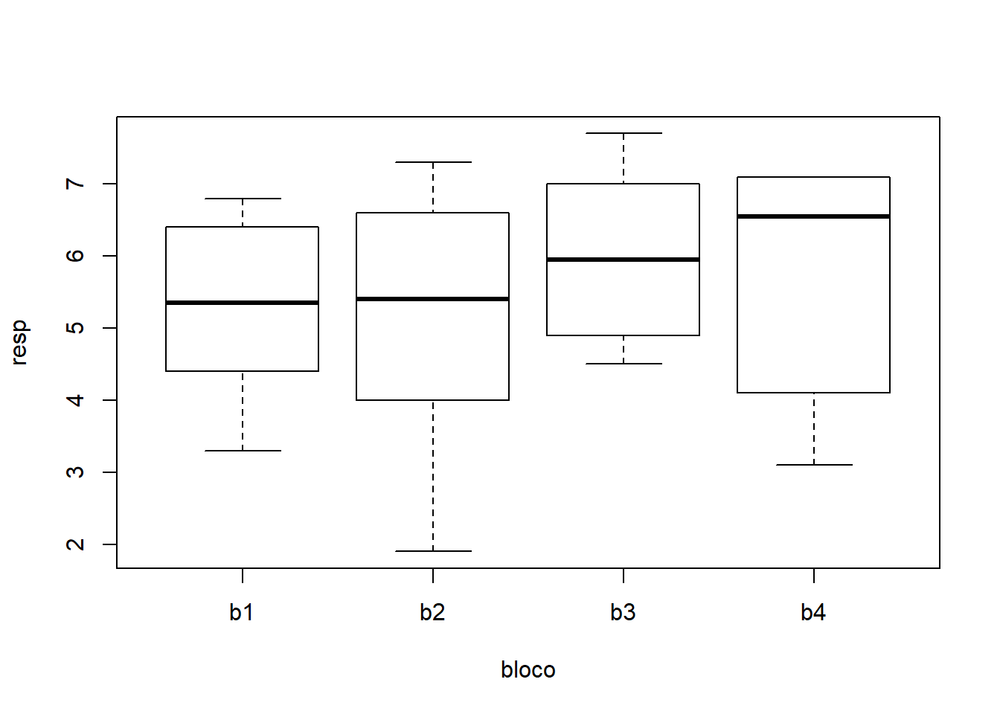
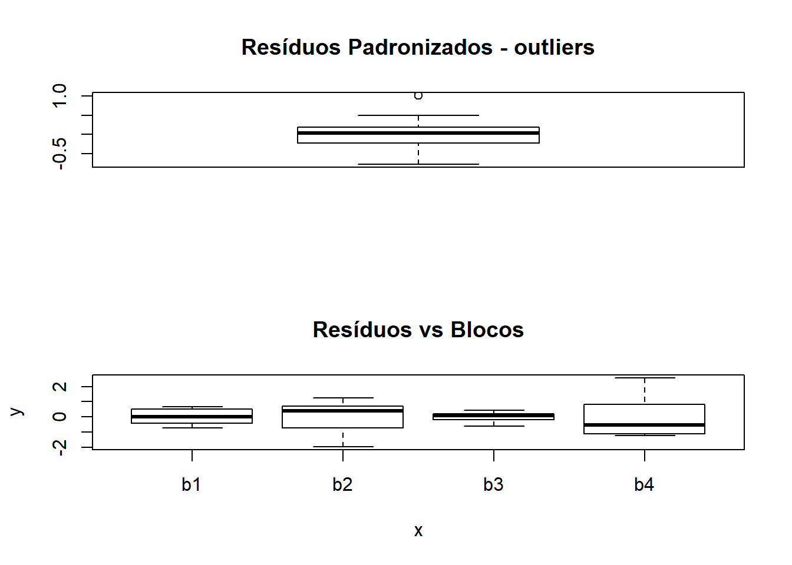

Serão utilizados os dados do experimento sobre percentual de óleo em S. linicola em diferentes estágios de crescimento, conduzido no Delineamento em Blocos Completos Casualizados.
| estag | bloco | resp |
|---|---|---|
| e1 | b1 | 4.4 |
| e1 | b2 | 5.9 |
| e1 | b3 | 6.0 |
| e1 | b4 | 4.1 |
| e2 | b1 | 3.3 |
| e2 | b2 | 1.9 |
| e2 | b3 | 4.9 |
| e2 | b4 | 7.1 |
| e3 | b1 | 4.4 |
| e3 | b2 | 4.0 |
| e3 | b3 | 4.5 |
| e3 | b4 | 3.1 |
| e4 | b1 | 6.8 |
| e4 | b2 | 6.6 |
| e4 | b3 | 7.0 |
| e4 | b4 | 6.4 |
| e5 | b1 | 6.3 |
| e5 | b2 | 4.9 |
| e5 | b3 | 5.9 |
| e5 | b4 | 7.1 |
| e6 | b1 | 6.4 |
| e6 | b2 | 7.3 |
| e6 | b3 | 7.7 |
| e6 | b4 | 6.7 |
## [1] "estag" "bloco" "resp"## estag bloco resp
## e1:4 b1:6 Min. :1.900
## e2:4 b2:6 1st Qu.:4.400
## e3:4 b3:6 Median :5.950
## e4:4 b4:6 Mean :5.529
## e5:4 3rd Qu.:6.725
## e6:4 Max. :7.700
## e1 e2 e3 e4 e5 e6
## 5.100 4.300 4.000 6.700 6.050 7.025## b1 b2 b3 b4
## 5.266667 5.100000 6.000000 5.750000Nos gráficos e resultados acima procuramos captar os principais aspectos dos dados bem como verificar se não há interação entre blocos e tratamentos, o que não deve acontecer neste tipo de experimento. A seguir vamos ajustar o modelo e obter outros resultados, incluindo a análise de resíduos e testes para verificar a validades dos pressupostos do modelo.
## Analysis of Variance Table
##
## Response: resp
## Df Sum Sq Mean Sq F value Pr(>F)
## bloco 3 3.141 1.0471 0.7966 0.514715
## estag 5 31.652 6.3304 4.8161 0.007964 **
## Residuals 15 19.716 1.3144
## ---
## Signif. codes: 0 '***' 0.001 '**' 0.01 '*' 0.05 '.' 0.1 ' ' 1## [1] "coefficients" "residuals" "effects" "rank"
## [5] "fitted.values" "assign" "qr" "df.residual"
## [9] "contrasts" "xlevels" "call" "terms"
## [13] "model"residuos <- (bc01.av$residuals)
par(mfrow=c(2,2))
plot(bc01$estag,residuos)
title("Resíduos vs Estágios \n Homocedasticidade")
preditos <- (bc01.av$fitted.values)
plot(residuos,preditos)
title("Resíduos vs Preditos \n Independência")
qqnorm(residuos,ylab="Residuos", main=NULL)
qqline(residuos)
title("Grafico Normal de \n Probabilidade dos Resíduos")
par(mfrow=c(2,1))respad <- (residuos/sqrt(anova(bc01.av)$"Mean Sq"[2]))
boxplot(respad)
title("Resíduos Padronizados - outliers")
plot(bc01$bloco,residuos)
title("Resíduos vs Blocos")
Teste para Normalidade dos Resíduos
##
## Shapiro-Wilk normality test
##
## data: residuos
## W = 0.96331, p-value = 0.5084Como foi detectado efeito de tratamentos faz-se um teste de comparações múltiplas e encerra-se as análises desanexando o objeto do caminho de procura.
## Tukey multiple comparisons of means
## 95% family-wise confidence level
## factor levels have been ordered
##
## Fit: aov(formula = resp ~ bloco + estag)
##
## $estag
## diff lwr upr p adj
## e2-e3 0.300 -2.33388607 2.933886 0.9988934
## e1-e3 1.100 -1.53388607 3.733886 0.7504223
## e5-e3 2.050 -0.58388607 4.683886 0.1767071
## e4-e3 2.700 0.06611393 5.333886 0.0429803
## e6-e3 3.025 0.39111393 5.658886 0.0201713
## e1-e2 0.800 -1.83388607 3.433886 0.9151913
## e5-e2 1.750 -0.88388607 4.383886 0.3110495
## e4-e2 2.400 -0.23388607 5.033886 0.0844614
## e6-e2 2.725 0.09111393 5.358886 0.0405790
## e5-e1 0.950 -1.68388607 3.583886 0.8431594
## e4-e1 1.600 -1.03388607 4.233886 0.3997375
## e6-e1 1.925 -0.70888607 4.558886 0.2257046
## e4-e5 0.650 -1.98388607 3.283886 0.9627929
## e6-e5 0.975 -1.65888607 3.608886 0.8289649
## e6-e4 0.325 -2.30888607 2.958886 0.9983769